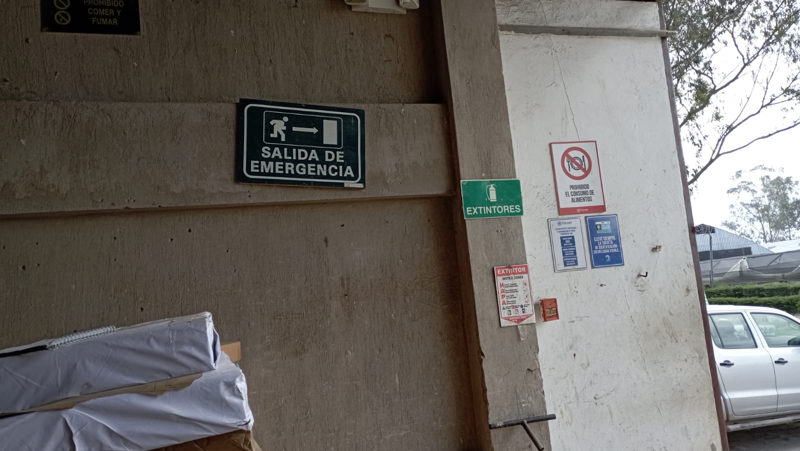

Experiencias laborales - Pasantías
Información
- Lugar de las Pasantías: Malchinguí, Florsani.
- Periódo de Tiempo: Del 02 de Enero al 07 De Febrero de 2024
- Area Designada: Zona de Almacen
- Hora de Ingreso y Salida: 6:30 AM a 15:30 PM
Experiencias:
Experiencia 1
La primera experiencia fue algo nuevo pues había que comenzar algo temprano y desplazarnos a la plantación desde las 6:00 AM hasta las 15:30 PM.
Experiencia 2
Otra experiencia fue conocer el funcionamiento de esa área, pues ahí se recibía y entregaba herramientas, materiales, implementos, químicos y fertilizantes a todas las zonas de la plantación, para lo cual se tenía que realizar facturas e inventarios en el programa de la plantación además de órdenes de salida de cada producto.
Experiencia 3
Otra cosa que se experimento fue el horario preestablecido de cada trabajador pues existia una rotacion en la hora del almuerzo y desacanso.
Experiencia 4
Tambien en nuestra estadia en las pasantias debiamos contar con un carnet de identificación de Pasante para no generar algun inconveniente mientras asistiamos cada día.
Experiencia 5
Ademas se debia rellenar un registro de asistencia con nuestros datos personales y nuestra firma al momento de ingreso y salida.
Experiencia 6
Se conto con la guia de una persona encargada de nosostros durante las pasantias para que desde el primer dia nos indicara el funcionamiento de esa zona y responder cualquier inquietud o duda que se presentara.
Experiencia 7
Algo interesante que la plantación contaba con varios departamentos muy organizados,ademas que contaba con un area de parqueo para algun vehiculo o motocicleta y una area de emfermeria para atender a los trabajadores.

Experiencia 8
Un inconveniete que se presento fue la no justificacion a las practicas que genero confusion y malo entendidos con el encargado del area de almacen en donde nos encontrabamos,pues al no ir a las pasantias habia que elaborar un permiso correspondiente explicando el porque de su no asistencia, pero que al final se converso y se explico el inconveniente llegando a un entendimiento con la persona encargada.

Experiencia 9
Otra experiencia fue el colaborar a descargar y cargar las planchas de carton de las flores y rosas,la cual fue algo arduo y muy agotador.
Experiencia 10
La persona encargada nos indico en una zona especifica la elaboración de etiquetas que posteriormente se entregaba a varias areas como pesaje de Fertilizantes y area de Quimicos donde se preparaba los fertilizantes para los terrenos de la plantación.

Experiencia 11
Siempre fue el tema del clima en algunas ocasiones pues desde la mañana se encontraba muy frio o al trasladarse a nuestras casas se presentaba fuertes lluvias.

Experiencia 12
Durante el periodo de la semana 2 se paralizo las practicas profesionales debido a la delicada situacion del pais, en donde se mantuvo en casa hasta nuevas disposciones por parte del colegio.